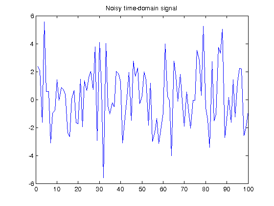
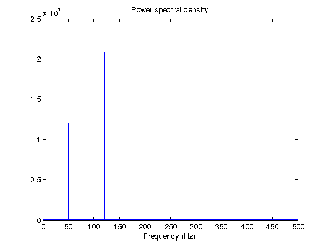

Using FFT on the GPU for Spectral Analysis
This demo uses Parallel Computing Toolbox™ to perform a Fast Fourier Transform (FFT) on a GPU. A common use of FFTs is to find the frequency components of a signal buried in a noisy time-domain signal.
Contents
Create Data on the GPU
First we simulate the signal. Consider data sampled at 1000 Hz. We start by forming a time axis for our data running for a large number of samples. The signal consists of two harmonic components. We use the gpuArray function to transfer data to the GPU for further processing. We start by setting up the time vector timeVec, and then calculate signal as a combination of two sinusoids at frequencies freq1 and freq2.
sampleFreq = 1000; sampleTime = 1/sampleFreq; numSamples = 2^23; timeVec = gpuArray( (0:numSamples-1) * sampleTime ); freq1 = 2 * pi * 50; freq2 = 2 * pi * 120; signal = sin( freq1 .* timeVec ) + sin( freq2 .* timeVec );
Add Noise to the Signal
We add some random noise to the signal. We can bring the data back to the host using the gather function prior to plotting.
signal = signal + 2 * randn( size( timeVec ) );
yc = gather( signal );
plot( yc(1:100) );
title( 'Noisy time-domain signal' );
 Perform Spectral Analysis
Clearly, it is difficult to identify the frequency components from looking at this signal. We can see the frequency components by taking the discrete Fourier transform using the Fast Fourier Transform. Because we sent signal to the GPU, the FFT is performed on the GPU.
transformedSignal = fft( signal );
Compute the Power Spectral Density
The power spectral density measures the energy at various frequencies. There is currently limited support for complex arithmetic for GPUArray objects, so we use real and imag to compute the power spectrum.
realPart = real( transformedSignal );
imagPart = imag( transformedSignal );
powerSpectrum = (realPart .* realPart + ...
imagPart .* imagPart) ./ numSamples;
Display the Power Spectral Density
We must use the gather function to bring powerSpectrum back to the host for plotting.
powerSpectrum = gather( powerSpectrum ); frequencyVector = sampleFreq/2 * linspace( 0, 1, numSamples/2 + 1 ); plot( frequencyVector, powerSpectrum(1:numSamples/2+1) ); title( 'Power spectral density' ); xlabel( 'Frequency (Hz)' );